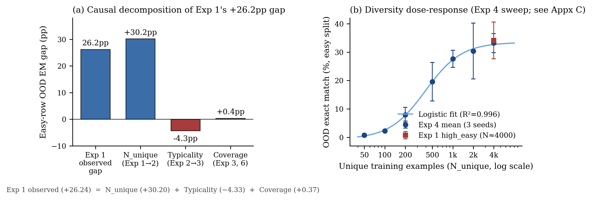
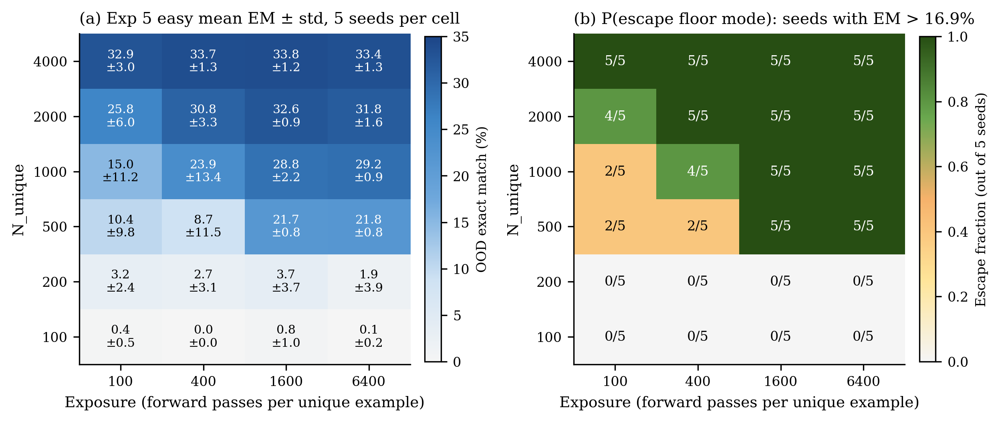
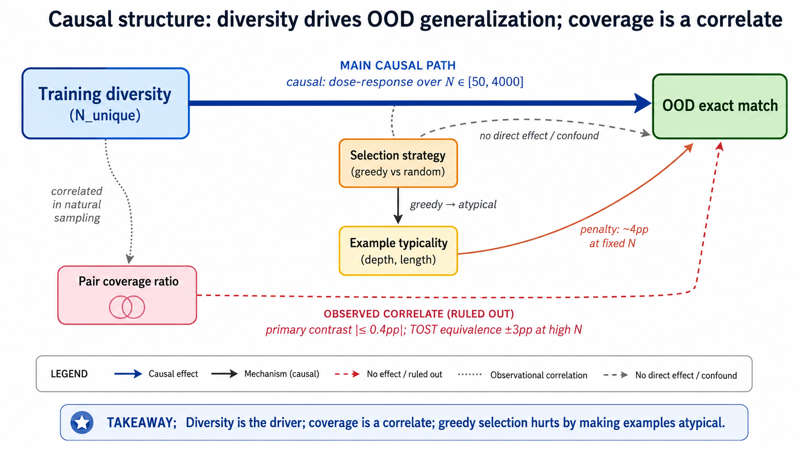
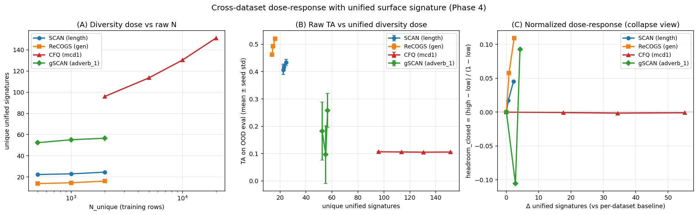
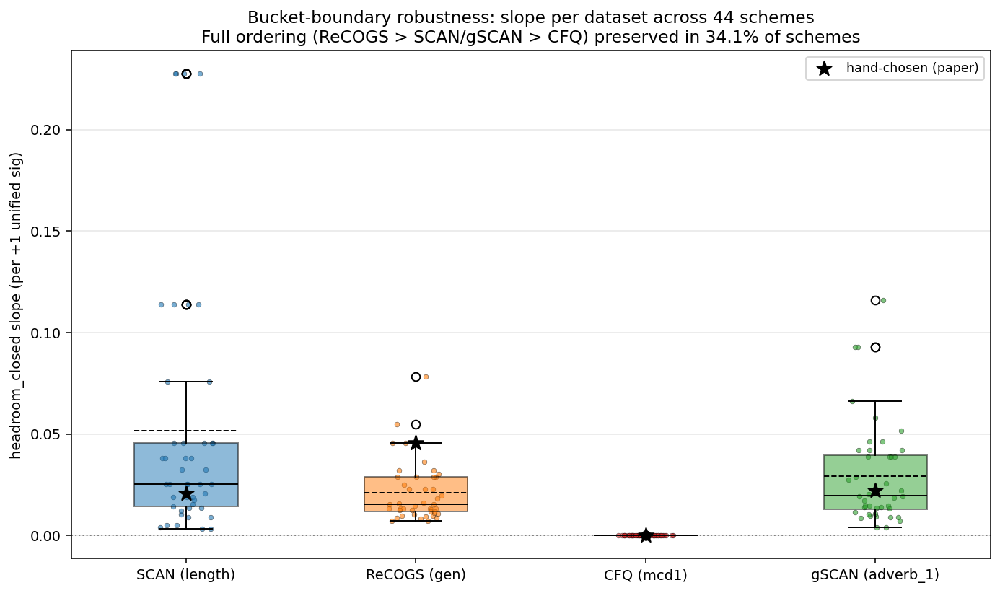

Preface
This is the companion post to a paper I just put up, Diversity Drives, Coverage Follows: Decomposing What “More Data” Buys in Compositional Generalization. The paper is where the numbers, the equivalence tests, and the audit framework live. This is where I try to say what actually happened and what I now believe, in the way I’d say it to someone over coffee. It belongs to the modularity and compositionality research program I started laying out earlier in the year, specifically the second thread there: when does composition generalize?
1. The practitioner’s question
Imagine you are building a training set for a model you want to generalize compositionally. You have a budget, by which I mean a fixed number of forward passes the model will see during training. The question is: what should that budget actually be spent on?
There are three plausible answers, and the compositional-generalization literature gives different prescriptions depending on whose paper you are reading:
- Pair coverage. Make sure your training set contains, ahead of time, as many of the compositional combinations the test set will ask about as possible. The intuition is that the model can’t recombine pieces it has never seen at all, so the fraction of testable pairs you’ve at least exposed once should predict performance.
- Diversity. Use as many distinct examples as possible. Don’t repeat. The intuition is that the model needs variety to actually abstract; repetition just memorizes.
- Exposure. Pick a smaller set of examples and let the model see each of them many times. The intuition is that the model needs enough passes over each example to actually fit the structure.
These prescriptions are not just different. They are in some sense incompatible under a fixed budget: each forward pass spent on a new unique example is a pass not spent revisiting an old one, and each example whose inclusion was driven by coverage criteria is one not driven by raw distinct-example count. So when a practitioner reaches the question of “what should I do at the margin,” the answer matters.
The paper this post summarizes set out to answer this question for one specific task family (compositional semantic parsing and related benchmarks). The honest version of the answer is: diversity drives, exposure refines, and pair coverage turns out to be a side effect masquerading as a mechanism. The harder version of the story is what happens when you try to make that claim across multiple datasets, and that’s where the methodology contribution shows up.1
2. The COGS arc, in six experiments
The core of the paper is six experiments on COGS, run with T5-small (roughly 60 million parameters). Each experiment was designed to isolate one of the variables the previous experiment had failed to control. The chronology is the story; rearranging it would lose the point.

2.1 Experiment 1: pair coverage looks like the answer
I started with a clean 2×2 factorial. One axis was coverage, high vs. low; the other was difficulty, easy vs. hard. Three seeds per cell, all training budgets fixed at 4000 examples. The high-coverage cells used a greedy selection that maximizes pair coverage over a pool of roughly 4000 unique examples; the low-coverage cells used 200 unique examples, each repeated 20 times.
On the easy split, the high-coverage cells outperformed the low-coverage cells by +26.2 percentage points (34.1% vs. 7.9%). Effect size was enormous; the result was consistent across all three seeds.
If I had stopped here, this would have been a paper called something like “Coverage Beats Scale” and it would have been wrong in an interesting way. Two confounds were visible at pre-execution review: the high-coverage cells had roughly 20× more unique examples than the low-coverage cells, and the greedy selection routine was visibly preferring structurally unusual examples.
2.2 Experiment 2: equalize diversity, watch coverage flip sign
The fix for the first confound was easy in principle: hold the number of unique examples constant and only let coverage vary. So I ran the same 2×2 with all cells at 200 unique examples each. The high-coverage cells still used greedy selection (now picking the 200-example subset that maximized coverage); the low-coverage cells used random selection.
The high cells collapsed from 34.1% on Experiment 1 to 3.9% on Experiment 2. The low cells replicated their Experiment 1 number seed-for-seed, which was the cleanest evidence I could ask for that nothing else in the pipeline had changed. The coverage contrast was now slightly negative. So at fixed diversity, the greedy “let’s maximize coverage” strategy actively hurts: it spends the repetition budget consolidating examples that don’t look like the ones the model will see at test.
This is where I should have realized the picture would be more interesting than I’d planned for.
2.3 Experiment 3: random selection, no typicality penalty
To kill the typicality confound from Experiment 2, I ran the same factorial again, but with both cells using random selection. I varied coverage by pre-screening a thousand random seeds and keeping the top-5% and bottom-5% by coverage, conditional on having mean example depth and mean output length close to the pool medians. That gave me a clean ~15pp coverage gap with no typicality difference.
The coverage contrast at easy was +0.37 percentage points with a p-value of 0.97. Coverage, controlled for typicality and diversity, did nothing. At this point the three experiments together gave the additive decomposition that ended up being the headline result:
- +30.20pp from the diversity confound (E1 → E2 swing)
- -4.33pp from the typicality penalty (E2 → E3 restoration)
- +0.37pp from coverage as an independent variable (E3 direct)
The original +26.24pp gap was exactly the sum of these. Pair coverage was a side effect of diversity and selection strategy. There was no mechanism there.
2.4 Experiment 4: the dose-response
Once it was clear that diversity was doing the work, I wanted to see the shape. So a seven-level sweep of \(N_{unique}\) on the easy split, budget fixed at 4000 examples each, scanning from \(N=50\) up to \(N=4000\).2
Easy EM rose monotonically from 0.71% to 33.18%, Spearman \(\rho = 1.0\). A logistic in \(log(N_{unique})\) fit with \(R^2 = 0.996\)…the curve the textbook would have predicted. The \(N=4000\) result matched the high-coverage cell from Experiment 1 to within 1 percentage point, which closes the loop: the original Experiment 1 advantage was diversity, full stop.
2.5 Experiment 5: diversity vs. exposure, head-to-head
The dose-response in Experiment 4 was getting at one variable at a time. To actually separate diversity from exposure, I needed a factorial that crossed them.

A 6×4 grid: six levels of \(N_{unique}\) from 100 to 4000, and four levels of exposure from 100 to 6400 forward passes per unique example. Five seeds per cell, 120 runs.
The ANOVA was unsubtle. Diversity’s partial \(\eta^2\) was 0.882. Exposure’s was 0.196. No level of exposure rescued the low-diversity cells, and at the top of the diversity axis a 64× increase in exposure moved mean EM by less than 1 percentage point.
The interesting thing was what exposure was actually doing in the middle of the grid. Several cells in the transition zone (\(N \in [500, 1000]\), moderate E) had within-cell standard deviation above 5pp. A Gaussian-mixture audit (with the right BIC test) classified these cells as mixtures of a floor mode and an escaped mode: some seeds were converging to a useful solution and some were getting stuck near zero. Logistic regression on \(P(escape)\) against \(log N\) and \(log E\) gave coefficients of \(+3.73\) and \(+1.06\). So exposure was raising the probability that a given initialization escaped the floor, not the ceiling the escaped runs eventually reached. That distinction generalized cleanly: the escaped seeds converged later than the stuck ones, not faster.
The way I now describe this is: diversity sets where you can get to; exposure changes the probability that any given run actually gets there.
2.6 Experiment 6: closing the coverage book at high diversity
Experiment 3 had ruled out a coverage effect at low diversity (\(N=200\)). It was still logically possible that pair coverage mattered at higher \(N\). So a final 2×4 factorial: two diversity levels (\(N=1000\) and \(N=2000\)), four coverage quantiles (q1, q25, q75, q99), all under random selection with typicality controls. For each cell, ten thousand seeds were pre-screened and the five seeds closest to the target quantile were retained.
The primary contrasts (q99 vs. q1) were within 0.4 percentage points in absolute value at both diversity levels. TOST equivalence to zero at ±3pp was supported at both. The main effect of N was huge (\(\eta^2 = 0.431\)); the main effect of coverage was statistically indistinguishable from zero (\(\eta^2 = 0.013\)).
That’s the COGS story: diversity drives, exposure refines, and pair coverage as a standalone variable has no detectable effect within the band tested.

3. Does this travel?
A within-dataset result with strong effect sizes is a thing. A result that replicates across multiple datasets is something else. So the next question was the natural one: does the “diversity drives, exposure refines” pattern hold beyond COGS?
The replication sweep used a smaller transformer (12 million parameters, trained from scratch) on four further benchmarks: SCAN length-split, ReCOGS gen, gSCAN-compositional adverb_1, and CFQ-mcd1. Five seeds per cell.

Three of the four datasets showed the same qualitative pattern. On SCAN, ReCOGS, and gSCAN-comp, diversity’s effect size on the primary metric was an order of magnitude or more larger than exposure’s. The specific numbers differed, but the qualitative classification (“Pattern P”: diversity-dominant, exposure as a refinement) held in every case.
The fourth dataset, CFQ-mcd1, did something different. Across a 10× scaling in unique examples (from \(N=2000\) to \(N=20000\)), target accuracy sat at \(0.106 \pm \varepsilon\) (essentially zero variance), in every cell. The bootstrap slope confidence interval was on the order of \(10^{-5}\), which is numerically negligible at this metric. The diversity dose was being administered (unified-signature counts grew from 96 to 151 across the sweep, which is the largest dose of any dataset in the study) and the model wasn’t moving.
I want to be careful about what this means. The flat line is robust to a number of bucketization choices (more on this in a moment), so the empirical signature itself isn’t an artifact. But there are at least two explanations for it: the 12M-parameter model is too small to find any of CFQ’s compositional structure, or CFQ’s pair-extraction adapter happens to be measuring surface co-occurrence rather than the actual compositional structure of the task. Both are plausible. Telling them apart requires either scaling the model up or substituting a canonical rule-trace measure for the surface adapter. We haven’t done either of those yet.3
So the qualitative finding “diversity drives, exposure refines” is 3-of-4 on the replication sweep, with the fourth case being either a capacity bound or a measure problem we can’t disambiguate from the present experiment alone. That’s the modest version of the claim, and the one I now believe.
4. The methodological detour I didn’t expect
When you have four datasets with positive (or near-zero) diversity slopes, the obvious next move is to rank them. Which one converts unit-of-diversity into unit-of-generalization most efficiently? At what slope, exactly? This would be very useful, because cross-dataset learnability rankings would tell us something about the structure of compositional generalization independent of any one benchmark.
This is the move I tried to make, and it’s the move that produced the methodological half of the paper, because it didn’t work.
4.1 The per-adapter measures aren’t measuring the same thing
Every benchmark in the sweep ships with a per-adapter extract_pairs function that the analysis pipeline calls without modification. When I actually read each one carefully:
- COGS / ReCOGS:
extract_pairsreturns logical-form variable co-occurrence pairs — things like(cat, see.agent)and(boy, see.theme). The construct is bindings: which entities participate in which thematic role of which event. - SCAN:
extract_pairsreturns token-pair compositions over the input command and the action sequence. The construct is parse-tree composition. - gSCAN:
extract_pairsreturns Cartesian-product co-occurrences over coordinate, adjective, and verb. The construct is grounded Cartesian product. - CFQ:
extract_pairsreturns surface co-occurrences of SPARQL tokens. The construct is surface co-occurrence of output tokens, not any kind of semantic binding.
These are four operationally different constructs sharing one function name. Naive cross-dataset effect-size comparisons on “diversity” are silently merging them. This is a textbook construct validity problem, and it had been quietly load-bearing in my analysis until I sat down with the code.
4.2 A unified signature, but only as a partial fix
The partial fix is a unified surface signature: I bucketize each training example along four dimensions (atom count, pair count, compositional depth, output length) and count how many unique signatures the training manifest covers. This puts the four datasets on a common scale, in the sense that “unique signatures” now means the same thing across all of them.
Doing this compresses the per-adapter cardinality spread from roughly 40× to roughly 6×. The qualitative finding (“diversity drives”) is unchanged, and the CFQ flat-floor result is preserved (the unified signature shows the largest dose for CFQ, and the model still doesn’t respond). So far so good.
But the unified signature still depends on the choice of bucket boundaries. I tested 44 alternative bucketizations.4

The qualitative finding “CFQ is flat, the other three are positive” was preserved in 100% of schemes. The magnitude ranking among the three positive datasets was preserved in 34% of schemes. The specific claim “ReCOGS has a higher slope than SCAN” was preserved in 36% of schemes. If I’d picked one bucketization scheme and reported it as the answer, I’d have been making a claim that flipped under most reasonable alternatives.
4.3 Most of the cross-dataset spread is baseline arithmetic
The closed-headroom metric I’d been using to compare datasets, \((TA_{\text{high}} - TA_{\text{low}}) / (1 - TA_{\text{low}})\), is sensitive to the baseline TA. For a fixed absolute gain, a higher baseline produces a larger headroom-closed value, because the denominator is smaller. So if two datasets have identical absolute gains but different baselines, they’ll land at different headroom values, and the resulting cross-dataset spread is denominator arithmetic, not signal.
I ran a synthetic null calibration: fix the absolute gain at a constant (\(+0.03\)) for all datasets, and recompute the closed-headroom spread that this synthetic identical-gain scenario produces. The synthetic spread was \(1.66\times\). The observed spread was \(2.41\times\). So roughly 69% of the spread I’d been reading as cross-dataset signal was baseline arithmetic, and only about 31% was differential gain.
4.4 Five seeds per cell is below threshold
The clincher: at five seeds per cell, no pair of datasets in my sweep is pairwise distinguishable by permutation test. The closest pair (ReCOGS vs. CFQ-mcd1) is at \(p = 0.104\). The bootstrap confidence intervals on the slopes look like they should be distinguishable visually, but the permutation null is wider than the individual bootstrap CIs because it correctly accounts for between-dataset variance under exchanged labels.
Five seeds per cell is the field-standard configuration. So at the field-standard configuration, the cross-dataset magnitude claims I was trying to make weren’t statistically defensible. I think this is worth saying out loud, because it’s not a property of my study — it’s a property of the experimental design that has been load-bearing for a lot of papers in this space.
5. What survives, and what doesn’t
The four steps above (per-adapter measure audit; unified surface signature; bucket-boundary robustness sweep; baseline-arithmetic null calibration) are what I’m now calling the audit framework. Applied to my own data, the framework sorts the claims into two lists.
Robust qualitative claims, that I’d defend:
- Within each learnable dataset, diversity drives generalization and exposure is a refinement. Three of four cross-dataset replications preserve this.
- CFQ-mcd1 at the 12M-parameter from-scratch configuration is a flat floor under the current surface-pair measure. Slope is zero in 100% of bucketization schemes.
- The partition “learnable vs. flat-floor” is 100% bucket-robust.
Fragile quantitative claims, that I would not defend:
- Specific magnitude rankings among the three learnable datasets. Only 34% bucket-robust.
- Specific slope values as primary findings. These are point estimates from one bucketization out of many.
- Direct Cohen’s d comparisons across datasets. Different metric regimes, different noise floors, no portability.
- Cross-dataset diversity-slope hierarchies at five seeds per cell.
The thing I want practitioners and researchers to take from the methodology section is not “audit your numbers more carefully,” which is a banal injunction. It’s more specific. The four steps are cheap to run: the per-adapter audit is a code review, the unified signature is one bucketization plus a recomputation, the robustness sweep is a shell loop, and the null calibration is a few lines of arithmetic. The return on running them is that you get to make magnitude claims with an explicit robustness percentage and an explicit null share. The alternative, which I had been doing, is making magnitude claims with implicit confidence, in a regime where that confidence isn’t earned.
6. What I’d actually do if I were building a training set
For practitioners building compositional-generalization training sets in the regime I tested (small to medium models, sequence-to-sequence tasks), the priorities I’d suggest, in order:
- Raise the count of distinct examples. This is the lever that does the work. Within the tested range on COGS at T5-small, the dose-response is a clean logistic, and the high-diversity result is reproducible.
- Make sure exposure clears the floor. At intermediate diversity levels, exposure raises the probability that any given training run actually finds a productive trajectory. The empirical floor in my COGS data was roughly 1600 forward passes per unique example in the \(N = 500\)–\(1000\) band; the exposure floor drops as \(N\) rises, and at \(N = 4000\) even very low exposure suffices.
- Don’t optimize for pair coverage above the natural level. Within the COGS band I tested, the marginal gain above natural coverage at high diversity is under 0.5pp per 10pp of additional coverage. The selection strategy you’d use to push coverage further also tends to pull you toward atypical structures, which hurt.
- Be very careful with cross-dataset claims. The audit framework is cheap to run; the alternative is making magnitude claims that flip under reasonable bucketization choices.
There’s a follow-up worth being explicit about. The COGS coverage null targets the global pair coverage ratio. It does not falsify a more restricted hypothesis: that targeted inclusion of examples covering low-frequency compositional pairs might improve generalization beyond what diversity alone predicts. The engineered-tails experiment is the next thing on the list.
7. Where this fits in the bigger program
Stepping back, this is one slice of the second thread in the modularity and compositionality program: when does composition generalize? The slice it occupies is the data-side version of that question. Given a fixed model and a mostly-fixed training procedure, what property of the training set predicts whether composition will generalize?
The answer here is “diversity, with a floor on exposure, and not coverage.” That’s a useful answer in its specific regime, and a modest one. The bigger thread still has questions I haven’t touched in this work, most prominently:
- Does this generalize at scale? My biggest experiments are at 60 million parameters. Whether the diversity dose-response and the exposure floor structure transfer to 7-billion or 70-billion parameter models is open. The CFQ-mcd1 flat-floor finding is explicitly conditional on model capacity and on the surface-pair measure, and a larger model might lift it.
- What about the interface question? This work doesn’t touch the interface thread at all. The data axis turns out to dominate in the regime I tested, which is interesting because it suggests the interface variable has less room to matter when diversity is high. But I haven’t actually run that experiment.
- What is a compositional pair, really? This work used the per-adapter
extract_pairsand (when needed) the unified surface signature. Neither of these is a canonical construct of compositional structure; both are surrogates. A representation-level measure of compositionality — something derived from the model’s internal activations rather than the surface form of the data — would be the right next step on the measurement side.
I find the third one most uncomfortable. The entire premise of the audit framework is that we should be honest about what our measures are measuring; the punch line of running the audit is that the measures we have are surface measures and that the deeper construct is not yet operationalized.5
8. A few caveats
In the interest of heading off misreadings:
- This is not an argument that pair coverage doesn’t matter anywhere. It is an argument that the global pair coverage ratio does not have a detectable independent effect on OOD generalization in the regime I tested, once diversity and typicality are controlled. The targeted-tail version of the hypothesis is still testable.
- This is not an argument that diversity is the only thing that matters. Diversity is the dominant lever in the regime I tested. At larger scales, with different objectives, or under different interfaces, the picture could be quite different.
- This is not an argument that CFQ-mcd1 is “unlearnable.” It is an argument that at the 12M-parameter from-scratch configuration and under the current surface-pair adapter, no dose-response is detectable. The next-step disambiguation is two follow-ups: scale-up and canonical measure substitution.
- This is not a critique of any individual paper in the compositional-generalization literature. The five-seed convention in the field is a sensible default given the compute cost per cell. My point is narrower: at five seeds per cell, the cross-dataset magnitude claims that get made are not defensible by permutation test, and the audit framework gives a way to be explicit about which claims fall in which bucket.
9. How to read this
If you want the formal version with all of the equivalence tests, the exact ANOVA tables, and the appendices on the pipeline bug audit and the bimodal-cell analysis, the paper is the place. If you want the rough mental model and a sense of what I now believe and where I think the next experiments should go, this post is meant to be that.
I’d particularly welcome disagreement on the CFQ interpretation. The flat-floor signature is robust under the present model and measure; the cause (capacity vs. measure) is not yet pinned down. If you have an opinion about which of those two follow-ups (scale-up vs. canonical measure) is the better bet to run first, I’d like to hear it.
Footnotes
One of the genuinely uncomfortable findings of this work is that I think the field has been making cross-dataset magnitude claims it isn’t entitled to. I don’t make that claim lightly, because I include my own earlier instinct in the indictment. It is what it is.↩︎
A code review between Experiments 4 and 5 caught two pipeline bugs (an epoch-shuffle bug and a selection-strategy default), and the Experiment 4 sweep was re-validated post-fix at its anchor points. The shape held; the absolute numbers shifted by less than a percentage point at \(N >= 1000\). Appendix C of the paper documents this in full. The relevant lesson is that running anchor cells post-fix and confirming the shape is what gives me confidence in the dose-response now.↩︎
I’m pretty sure the right next move on CFQ is the canonical rule-trace measure, not the scale-up. The cost ratio is very favourable: a measure substitution is at most a couple of weeks of adapter work, while the next interesting scale-up is seriously expensive. If the rule-trace measure recovers a slope, we’ll know the floor was joint between capacity and measure. If it doesn’t, then we can spend the compute.↩︎
Four quantile schemes, three linear, three logarithmic, four information-theoretic, and thirty random Latin-hypercube schemes. The point of the random schemes is to check whether the “reasonable” schemes are a special slice of the full design space. They aren’t.↩︎
This is the natural place for a follow-up post on what a representation-level measure of compositionality would look like, and how it would interact with the per-adapter measures that the literature currently uses. That’s the next thing I want to write, but I want to think about it more first.↩︎